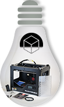

Jeff Bezos a investi 42 millions de dollars (31,6 millions d’euros) pour financer la construction d’une horloge géante (10 mètres de long, 60 mètres de large) qui sera nichée dans une grotte d’une montagne du Texas. Sa particularité ? Elle doit durer 10 000 ans, son aiguille ne bougera qu’une fois par an et un coucou en sortira à chaque nouveau millénaire seulement. Pour le PDG d’Amazon, cette horloge symbolise la nécessité d’avoir des projets à long terme. Sa construction ne sera achevée que “dans plusieurs années”, d’après Jeff Bezos.
En 2000, Jeff Bezos a participé à la fondation de Blue Origin, l’une des premières entreprises a s’être intéressée au voyage commercial dans l’espace. Depuis lors, cette société a reçu plus de 25 millions de dollars (environ 19 millions d’euros) de la Nasa pour développer les solutions les plus économiques possibles pour envoyer des astronautes dans l’espace. Blue Origin est en concurrence notamment avec le géant de l’aéronautique Boeing pour devenir l’équipementier des prochaines étapes de la conquête de l’espace.
Le fondateur d’Amazon s’est mis en tête de retrouver les fusées F-1 qui ont permis à la navette Apollo 11 d’emmener Neil Armstrong sur la Lune en 1969. Jeff Bezos a réussi à les localiser en 2012 à 4267 mètres sous l’eau au large de la Floride. Certaines parties ont déjà pu être repêchées et, le 19 juillet 2013, Jeff Bezos a confirmé qu’il s’agissait bien de composants de la fusée qui a emporté le premier homme à avoir marché sur la Lune.
C’est peut-être l’un des investissements les moins glamour de Jeff Bezos. Mais il a l’impact le plus concret sur le quotidien de Mr Tout-le-monde. La société Uber propose de mettre en relation des conducteurs de voiture avec des personnes en recherche d’un moyen pour se déplacer rapidement en ville. C’est une sorte de “particulier à particulier” des taxis qui rencontre un tel succès qu’Uber s’est déjà établi dans 38 villes dans le monde, dont Paris. À New York, face à la menace, les taxis cherchent depuis 2012 à faire fermer ce concurrent moins cher.
En 2011, alors que l’impression 3D n’était pas encore à la mode, une poignée d’investisseurs, dont Jeff Bezos, misent 10 millions de dollars (7,5 millions d’euros) dans MakerBot. Cette société fabrique des imprimantes 3D accessibles au grand public. Depuis que le fondateur d’Amazon a parié sur cette technologie, elle a largement gagné en popularité. À tel point que “The Economist”, fin 2012, l’a qualifié de “prochaine révolution industrielle”.
Cette société qui a levé, en juin 2012, 30 millions de dollars (26,6 millions d’euros) de plusieurs investisseurs dont Jeff Bezos a conçu Baxter, le premier robot capable de travailler comme un être humain dans une chaîne de production en usine. Alors que la plupart des robots industriels sont vendus plusieurs centaines de milliers de dollars, Baxter ne coûte qu’un peu plus de 20 000 dollars (15 000 euros). Pour Jeff Bezos et d’autres, Rethink Robotic est en train de démocratiser l’utilisation de ces robots même pour les PME.
Jeff Bezos s’intéresse aux énergies propres. Le PDG d’Amazon est l’un des investisseurs qui ont avancé 19,5 millions de dollars (14,7 millions d’euros) à General Fusion. Cette société canadienne a fait le pari de commercialiser le premier générateur à fusion nucléaire fin 2014. La promesse de General Fusion est de fournir de l’électricité à partir d’énergie nucléaire sans risque d’explosion, ni création de déchets nucléaires. En clair, cette start-up travaille sur une énergie nucléaire 100% écolo-compatible.